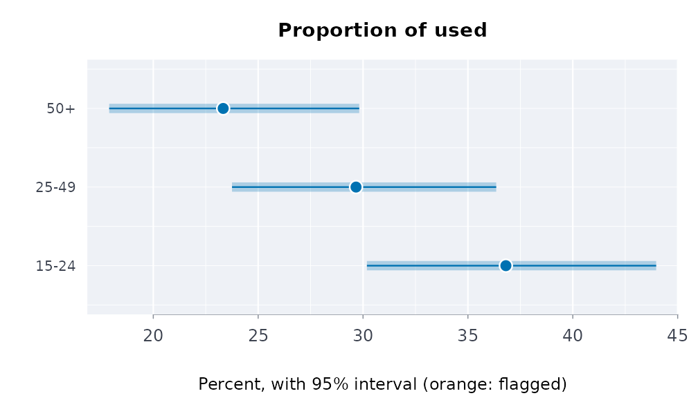

A survey respondent stands for many people, and not the same number
each: the final weight says how many. The weights fix the estimate; the
design (how the sample was drawn) fixes its uncertainty, and ignoring it
usually understates the interval. svydes() records the
design, svyest() gives means, totals, proportions and
ratios with design-based standard errors, and svycmp()
tests differences between groups.
Two ways to the variance
Public-use files from Statistics Canada and Health Canada ship replicate weights: hundreds of alternative weight columns, each a resampled version of the design. The estimate is recomputed under each and the spread of those estimates is the variance. Other surveys ship the strata and primary sampling units (PSUs), and the variance comes from Taylor linearization.
set.seed(1)
n <- 600
d <- data.frame(region = sample(c("north", "south", "east"), n, replace = TRUE),
age = sample(c("15-24", "25-49", "50+"), n, replace = TRUE),
used = rbinom(n, 1, 0.3), drinks = rpois(n, 3), w = runif(n, 40, 160))
# a stratified design: variance by linearization
lin <- svydes(d, w = "w", strata = "region")
lin
#> Survey design: 600 respondents, weights summing to 60,110
#> Variance: Taylor linearization, 3 strata, 600 PSUs
# a replicate design: 200 bootstrap weights, made here by resampling within region
reps <- sapply(1:200, function(r) {
m <- numeric(n)
for (g in unique(d$region)) {
i <- which(d$region == g)
m[i] <- tabulate(sample(length(i), replace = TRUE), length(i)) * length(i) / (length(i) - 1)
}
d$w * m
})
repdes <- svydes(d, w = "w", reps = reps, type = "bootstrap")
repdes
#> Survey design: 600 respondents, weights summing to 60,110
#> Variance: 200 replicate weights, bootstrap; scale 0.005, centred on the full-sample estimateEstimates by domain
A domain (a region, an age group) is estimated inside the whole design: a respondent outside it counts zero, but stays in the design. That is what makes the subgroup’s variance right.
e <- svyest(repdes, d, "used", by = "age", stat = "proportion", lvls = "1")
e
#> Survey proportion of used by age (bootstrap variance, 95% wilson interval)
#> age level estimate se lower upper cv n flag
#> 15-24 1 0.3681 0.03560 0.3018 0.4398 9.671 206 NA
#> 25-49 1 0.2967 0.03063 0.2375 0.3635 10.324 199 NA
#> 50+ 1 0.2333 0.03067 0.1790 0.2982 13.147 195 NA
plot(e)
svyest(lin, d, "drinks", by = "region")
#> Survey mean of drinks by region (linearization variance, 95% wald interval)
#> region estimate se lower upper cv n flag
#> east 2.857 0.1245 2.614 3.101 4.356 186 NA
#> north 2.822 0.1254 2.577 3.068 4.442 220 NA
#> south 3.046 0.1282 2.794 3.297 4.210 194 NAProportions get the modified Wilson interval of SAS PROC SURVEYFREQ (the effective sample size , adjusted for the design’s degrees of freedom and never above ); it stays inside 0 to 100% and behaves near the ends. Domains with fewer than 30 respondents are flagged, the rule Health Canada uses to suppress estimates in its data tool; here nothing is withheld, and the flag travels with the row.
Comparing groups
Two overlapping intervals do not mean two groups are the same, and
two separate intervals leave out the covariance between the estimates.
svycmp() takes the difference within the design:
cmp <- svycmp(repdes, d, "used", by = "region", stat = "proportion", lvls = "1",
ref = "north")
cmp
#> Survey proportion of used against north (95% interval)
#> domain level estimate reference difference se lower upper p_value
#> east 1 0.3074 0.3082 -0.000804 0.04468 -0.08838 0.08677 0.9856
#> south 1 0.2862 0.3082 -0.021992 0.05139 -0.12272 0.07874 0.6687
plot(cmp)
The Canadian Substance Use Survey, against the published figures
CSUS 2023 ships 1,000 mean bootstrap weights, each
the average of 12 bootstrap weights, so the bootstrap variance is
multiplied by 12 (Health Canada’s technical notes; the same as Fay’s BRR
with
).
The public-use file and its weights are on data.rmorie.com (sign in once
with rmbl login), where dload() checks each
table against the SHA-256 its manifest lists:
a <- dload("csus_2023/pumf") # 36,180 respondents
b <- dload("csus_2023/bootstrap") # PUMF_ID, WGT_PUMF and BWGT1 ... BWGT1000Or, without signing in, from Health Canada’s own copies on the Open Government Portal (the same files, 612 MB for the weights):
src <- "https://open.canada.ca/data/dataset/65e2d45e-efc6-4c29-9a9b-db59bc96aa0e/resource"
pumf <- file.path(tempdir(), "csus2023_pumf_final.csv")
bwt <- file.path(tempdir(), "csus2023_pumf_bwt.csv")
bldl(paste0(src, "/c2c1795b-4501-49ba-9dd1-5b8360cc3b2e/download/",
"csus2023_pumf_final.csv"), pumf)
bldl(paste0(src, "/7d19d47a-5f42-4447-b735-aa4d677ad5ed/download/",
"csus2023_pumf_bwt.csv"), bwt)
a <- utils::read.csv(pumf)
b <- utils::read.csv(bwt)
# With rmorie installed, the same two files come from
# rmorie::morie_load_dataset() with the keys "cu23mf" and "cu23bt".Either way, the design and the lifetime cannabis question are:
a$can <- ifelse(a$CAN_Q01 < 0, NA, a$CAN_Q01) # -8: not stated
des <- svydes(a, w = "WGT_PUMF", reps = b, id = "PUMF_ID",
type = "meanboot", msize = 12)
svyest(des, a, "can", stat = "proportion", lvls = c("1", "2"))Run on 13 October 2026 (1.6 seconds for the 1,000 replicates), against Health Infobase’s published table:
| Lifetime cannabis use | Published % | Published 95% CI | Here % | Here 95% CI |
|---|---|---|---|---|
| Yes, just once | 9.907782 | 9.544212 to 10.28363 | 9.907816 | 9.522047 to 10.30743 |
| Yes, more than once | 53.192923 | 52.677340 to 53.70783 | 53.193086 | 52.677503 to 53.70799 |
The percentages agree to the fourth decimal, and so does the second interval, whose design effect is below one so the interval is the plain Wilson one at the 36,024 respondents. The first interval is slightly wider here: Health Canada computed from its master file, and the public-use weights are not identical to it (the percentages differ in the fifth significant digit).
When you only have the published table
Often there is no microdata, only the published table: an estimate
and its 95% limits for each group. The limits carry the design. A
standard error is the limits’ width over
,
and it includes the design effect of the survey’s weights and clusters.
scests() puts each Statistics Canada estimate beside its
limits. indgap(), dstntst() and
ordcmp() then compare groups from them.
They treat the groups as independent samples. Disjoint domains of one survey nearly are, but not exactly, since they share strata and clusters. The exact comparison needs the bootstrap weights, which Statistics Canada holds in its Research Data Centres.
Perceived mental health of First Nations, Metis and Inuit adults living off reserve, 2019/2022 (table 13-10-0924-01):
h <- indiex("health")
mh <- h[h$period == "2019/2022" & h$age == "Total, 18 years and over" &
h$indicator == "Perceived mental health, very good or excellent", ]
indgap(mh, "group", "estimate", "lower", "upper", qual = "quality")[
, c("group", "difference", "diflo", "difup")]
#> group difference diflo difup
#> 1 First Nations -15.7 -18.53593 -12.864070
#> 2 Métis -8.7 -11.58531 -5.814692
#> 3 Inuit -13.7 -20.16568 -7.234321
dstntst(mh[mh$group != "Non-Indigenous", ], "group", "estimate", "lower", "upper")
#> Distinctions test across 3 groups: Q = 11.97 on 2 df, p = 0.00252, I^2 = 83%
#> Pooled (inverse-variance) 49.11; the groups differ: report each one, not the pooled figureLinearization or replicates, the same answer
On the same data the two routes agree closely when the replicates come from the same design:
rbind(linearization = svyest(lin, d, "drinks")[, c("estimate", "se")],
bootstrap = svyest(repdes, d, "drinks")[, c("estimate", "se")])
#> estimate se
#> 2.906 0.07295
#> 2.906 0.07324Every variance formula here is checked in the package tests against the survey package to machine precision: linearized means, totals, ratios, proportions and domains with a finite population correction; JK1, bootstrap and Fay replicate designs; and differences between domains.